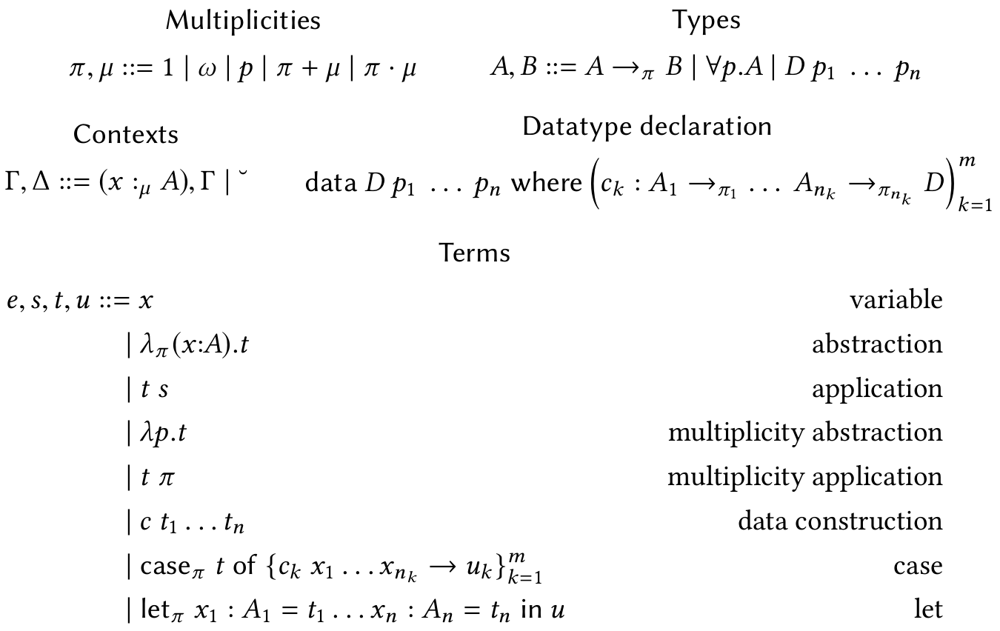
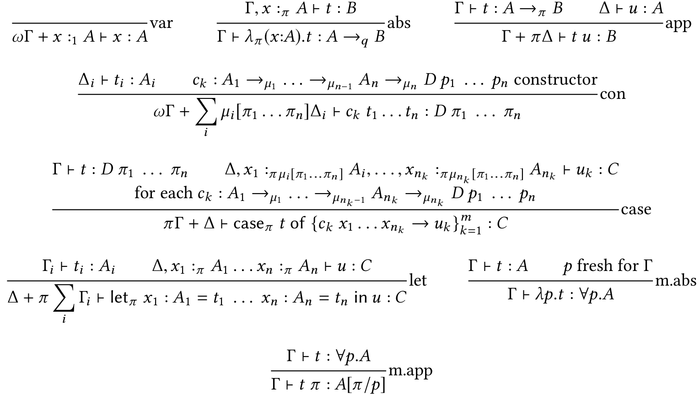

class: center, middle # Linear Haskell ## Practical Linearity in a Higher‑Order Polymorphic Language _by Jean-Philippe Bernardy, Mathieu Boespflug, Ryan R. Newton, Simon Peyton Jones, Arnaud Spiwack_ Presenter: [Artem Pelenitsyn](http://staff.mmcs.sfedu.ru/~ulysses/), ČVUT --- # Linear Types: Promises * Correctness Guarantees * Efficiency --- count: false # Linear Types: Promises * Correctness Guarantees * <del>Efficiency</del> (not for now) -- # Linear Types: Challenges * Backward Compatibility * Reusing Existing Codebase * Retrofitting In a Realistic Language --- # What Kind of Guarantees? * Does my sorting function return sensible result? ```haskell sort :: [a] → SortedList a -- vs. sort :: [a] ⊸ SortedList a ``` * Can I do in-place updates? * Do I close my file handles? --- # Approach: Linear Arrows `f :: s ⊸ t` assures that: * **if** `(f u)` is _consumed_ exactly once, * **then** the argument `u` is _consumed_ exactly once. -- _Consume_ ::= * To consume a **value of atomic base type** (like `Int` or `Ptr`) exactly once, just _evaluate_ it. * To consume a **function** value exactly once, apply it to one argument, and consume its result exactly once. * To consume a **value of an algebraic datatype** exactly once, pattern-match on it, and consume all its linear components exactly once. --- # Example: List Concatenation ```haskell -- List datatype data [a] = [] -- empty | a : [a] -- : ~ cons (++) :: [a] ⊸ [a] ⊸ [a] -- Type annotation -- Definition by pattern matching on first argument: [] ++ ys = ys (x : xs) ++ ys = x : (xs ++ ys) ``` -- ⇒ Datatype contructors are linear by default. (Don't like this? We can do a la carte) --- # Datatype Linearity a la Carte _Task_ Function `f` needs a pair to use its components non-symmetrically (say, first one linearly, second — unrestrictedly) -- ```haskell data PLU a b where PLU :: a ⊸ b → PLU a b f :: PLU (MArray Int) Int ⊸ MArray Int ``` -- Even better: ```haskell data U a where -- Unrestricted resource U :: a → U a f :: (MArray Int, U Int) ⊸ MArray Int ``` --- # Different Arrows Interplay Nicely .left-half[ ```haskell f :: s ⊸ t g :: s → t g x = f x ``` ] -- .right-half[ ```haskell sum :: [Int] ⊸ Int f :: [Int] ⊸ [Int] → Int f xs ys = sum (xs ++ ys) + sum ys ``` ] -- .left-half[ ```haskell f1 :: (Int, Int) → (Int, Int) f1 x = case x of (a, b) → (a, a) f2 :: (Int, Int) ⊸ (Int, Int) f2 x = case x of (a, b) → (b, a) f3 :: (Int, U Int) ⊸ (Int, Int) f3 x = case x of (a, _) → (42, a) ``` ] --- #Multiplicity Polymorphism Is `map` of `(a ⊸ b) → [a] ⊸ [b]` or of `(a → b) → [a] → [b]`? -- Neither, it is ```haskell map :: ∀p. (a →_p b) → [a] →_p [b] ``` -- So we abbreviate: * `⊸` ::= `→₁` * `→` ::= <code>→<sub>ω</sub></code> Thus, we have two multiplicities: 1 and ω. --- # Midterm: Typing Function Composition ```haskell (◦) :: ∀p q. (b →_p c) ⊸ (a →_q b) →_p a →_{???} c (f ◦ g) x = f (g x) ``` --- count: false # Midterm: Typing Function Composition ```haskell (◦) :: ∀p q. (b →_p c) ⊸ (a →_q b) →_p a →_{p·q} c (f ◦ g) x = f (g x) ``` --- #Linear Arrows vs Linear Kinds .right[(or: Girard was right in the first place)] -- - Strictness & Divergence .left-half[ ```haskell f :: a ⊸ (a, Bool) f x = (x, True) ``` ] .right-half[ ``` haskell g :: [Int] ⊸ [Int] g xs = repeat 1 ++ xs ``` ] -- - Exceptions -- - Single type universe -- - It can play nicely with dependent function types too! --- # On the other hand … How to use `⊸` when one expects `→`, e.g.: ```haskell f :: Int ⊸ Int g :: (Int → Int) → Bool h = g f -- Legal??? ``` In general, do we want `⊸ <: →`? -- Mom told me: don't mix HM and subtyping! So let's make a hack: ```haskell h = g f ↝ g (λx → f x) ``` This has certain tradeoffs… --- # On the other hand … (contd.) Can we have linear return types? -- We are smart and can invent “encodings”: ```haskell f :: A → (B ⊸ !r) ⊸ r -- f effectively accepts A and returns linear B ``` -- This plays nicely with monads! ```haskell type IO p a return :: a →_p IO p a bind :: IO p a ⊸ (a →_p IO q b) ⊸ IO q b ``` --- # Larger Example: Linear Input/Output ```haskell printHandle :: File ⊸ IO ω () printHandle f = do { (f, U b) ← atEOF f ; if b then closeFile f else do { (f, U c) ← read f ; putChar c ; printHandle f } } ``` ```haskell atEOF :: File ⊸ IO 1 (File, U Bool) closeFile :: File ⊸ IO ω () read :: File ⊸ IO 1 (File, U Char) putChar :: Char → IO ω () ``` ```haskell do { x ← a; f x } ~ bind a (\x → f x) ``` --- ### Talks Are Cheap, Show Me Some _Greek_: $\lambda_{\to}^q$ .center[] --- **Typing $\lambda_{\to}^q$:** `Γ ⊢ t : A` .small[consuming `t : A` exactly once will consume each binding `(x :_π A)` in Γ with multiplicity π] .center[] --- # Coda: Threats To Validity * Huge overhaul: change the whole `base`, also modification of GHC Core -- * Retrofitting still not completely thought of * GHC Proposals process is staling * Multiplicity 0 is already dropped -- * Type inference is not formally developed -- * Generally, elaboration of LH to $\lambda_{\to}^q$ (or GHC Core) is not 100% clear --- # On the bright side * A lot of work has been done. -- * Efficiency is on its way: * some reported in the paper (ad-hoc); * some of «cardinality analysis» subsumed by multiplicity annotations (good for inling: e.g. don't inline `(λx → x ++ x) expensive`). -- * Many applications in mind: * network-communication with 0 allocations, * GC-less, manual allocations, * resource-safe I/O, * safe API for the `streaming` library, * DSL for “printable” 3D-models. --- # References * Linear Haskell: Practical Linearity In a Higher-Order Polymorphic Language / _J.-P. Bernardy et al._ POPL'18 * Bounded Linear Types in a Resource Semiring / _D.R. Ghica and A.I. Smith_, ESOP '14 * (_or, if like dep-types:_) I Got Plenty o’ Nuttin’ / _C. McBride_, Wadler's Fest '16 * Linear Types Can Change the World! / _P. Wadler_, PCM '90 * Coeffects literature, e.g. * [Petricek et al.] @ ICALP '13 * [Brunel et al.] @ ESOP '14